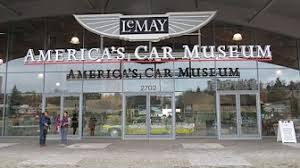
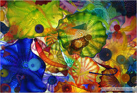
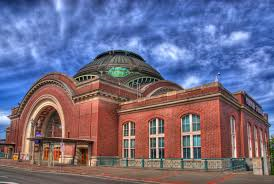
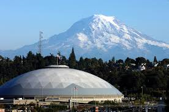
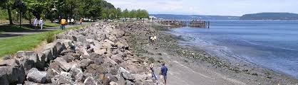

-
home
-
American Auto Museum
LeMay America's Car Museum (ACM), an entity of America's Automotive Trust, is an international destination for families and auto enthusiasts to celebrate America's love affair with the automobile and learn how it shaped our society. Based in Tacoma, Wash., the stunning 165,000-sq.-ft. facility has been recognized as one of MSN's 10 Best Automotive Museums worldwide, USA Today's 10 Best Museums in Seattle and KING5's 2015 Best Museum in Western Washington. America's Car Museum serves as an educational center for students of all ages, features 12 rotating exhibits and hosts five annual Signature Events.

-
Glass Museum
Although some of the original ideas about the Museum changed over time, many of the initial elements remained constant. The concept of a large glass studio, where visitors could watch artists create art from molten glass, was an integral part of the original plan-and the Hot Shop Amphitheater, located inside the 90-foot tall steel cone, fulfills that description today. The Museum was envisioned as a center that would nurture artists, celebrate the dramatic new Studio Glass movement and encourage creativity. This vision is realized through the exhibitions in the galleries, the art installations on the outdoor plazas, the hands-on art studio, and the Museum's diverse educational programs, as well as the Hot Shop.
Today, the Museum's stainless steel cone serves as a beacon to a stunning contemporary art museum as well as a symbol for the restoration of a waterway and the revitalization of a city.

-
Union Station
Washington Union Station is a major train station, transportation hub, and leisure destination in Washington, D.C. Opened in 1907, it is Amtrak's headquarters and the railroad's second-busiest station with annual ridership of just under 5 million. The station also serves MARC and VRE commuter rail services, the Washington Metro, and buses. At the height of its traffic, during World War II, as many as 200,000 passengers passed through the station in a single day. In 1988, a headhouse wing was added and the original station renovated for use as a shopping mall. Today, Union Station is one of the busiest rail facilities and shopping destinations in the country, and is visited by over 40 million people a year.

-
Tacoma Dome Events
The Tacoma Dome is an indoor arena located in Tacoma, Washington, United States, approximately 30 miles south of Seattle.

-
Rustin Way Waterfront
The Waterwalk at Point Ruston is the medium through which people connect and enjoy the unobstructed Puget Sound waterfront. This dynamic pedestrian-only esplanade, spanning the entire waterfront of the Point Ruston neighborhood, connects Tacoma's Pt. Defiance Park with Ruston Way and Downtown Tacoma. The Waterwalk provides countless recreational opportunities, accented by thoughtfully appointed benches, manicured gardens, inspired playgrounds and a wide variety of northwest-inspired large-scale mosaics.

-
About Us
-
-
Support The PNW
-